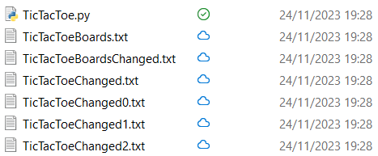

The Tic-Tac-Toe board is a square divided in nine other squares or cells. Three are three types of square: the corner square, the lateral square, and the central square, with its unique properties. Each of these nine squares can be named or numerated. If the squares are numerated, the standard squared-shape of the board can be represented as a sequence of the nine numerated squared. Since the squares are numerated, each of them preserves its unique properties even if their arrangement changed.
A move sets a square as taken. A move can't take a suqare already taken by another move. Moves come one after another in order, so there will be a first move, a last move, and intermediate moves. With this definition, the moves can be represented as integers. Moves in order create a sequence of moves. A board is made of nine squares, this means that the longest sequences will be made of nine moves. A move can be named after the name of the square it takes.
Those who make the moves are the players. They take turns to make a move. The two players are distinguished into the player to make the first move and the other player. In a sequence of moves, the first move "i" is made by the player who makes the first move (player A), the second move "i+1" is made by the other player (player B): it can be said that the moves "i+2k" are made by player A, while the moves "i+1+2k" are made by player B ("i" and "k" are integers). When a player makes a move, he claims the square taken by the move as its own. Since the squares are nine, the player who will make the first move can make more moves than the other player: this happens when the sequence is made of an odd number of moves.
A player can say to have done an alignment when he owns three particular squares. Since it has to be three squares taken by the same player, an alignment can only happen from move "i+5" to "i+9" ("i" is the first move made and an integer). In the standard-shaped board, the barycenters of those squares must lay on a same straight line. The cases when this happens are eight, which can be represented with named squares. Let the board have a central square "O": a vector in O points at a corner "A", and starts rotating in a direction, until he has pointed to each square; in the order that the squares were pointed by the vector, the squares will be named "B", "C", "D", "E", "F", "G", "H". It can be seen that the triples of squares with the barycenters which lay on a same straight line are A-B-C, A-D-F, H-G-F, H-E-C, A-O-H, C-O-F, B-O-G, D-O-E.
A Tic-Tac-Toe game starts with a blank board, with no square taken by the players. The game determinates a winner between the two players. At the beginning, there is no winner. The first player to do an alignment wins, and the game ends. If there are no squares left to take and the players still haven't done an alignment, the game ends with a draw.
A full board is a board which has all the nine squares taken. At the end of a Tic-Tac-Toe game it can happen to get a full board, so it isn't a totally abstract concept. However, full boards can go beyond a normal Tic-Tac-Toe game, so there will be cases where the players continue to play even if one of them wins. The characteristic that distinguishes a full board from another is the squares owned by the two players, it can be called the pattern of the full board. To reach the pattern, different moves sequences can be used. These sequences are all made of nine moves, but in a standard game the very same sequences can stop before the ninth move, since from the fifth move there is the possibility to do an alignment and end the game. So, these nine moves sequences represents standard games, sequences that creates the pattern of a full board. A full board is a way to represent more Tic-Tac-Toe games at once.
This argument is necessary for what comes next. Since the board is a square, it has some properties of rotation and reflection. Two boards are similar when, under rotations and reflections of the two, they both represent the same board. This is true when the squares of the two rotated or reflected boards are similar; it can also be said that the boards are changed. The similarity of the squares can vary depending on the necessity of who is searching the similarity.
Two full boards can be compared using the squares owned by the player. The similar boards will also have similar moves sequences, which points to the same squares but arranged in a different way.
Moves sequences can represent a board, so they can be compared as well. Two sequences are similar when the rotated or reflected sequences have the same moves in the same order.
There are 8 possible alignments that can be made in the board, but if rotations and reflections are applied, then there are 3 types of alignments: the diagonal alignment, the central alignment and the lateral alignment
There can be some cases when rotating and reflecting the moves sequences isn't enough to detect a similarity in the two. It can happen that if viewed as boards (as squares), the sequences can be seen similar, but when it comes to compare the singular moves they are not. This is because, as said previously, all the moves of the two sequences get changed, but there are cases when it only needs to be changed a part of the sequence.
For this project I set a few goals: find out how many and what boards the players can get at the end of a game, how many and what combination of moves the players can do, and making a small statistic review of all the project. To do the statistic review, I had to do a step at the time.
When I did this, I wasn't too good at coding, so some parts of my code could be painful to watch.
This project was made in Python, as it was the only programming language I knew.
Now that I think about it, the statistic review I wanted to do was more of a probability review, but I will continue to call it "statistic review" to not complicate the things.
In Tic-Tac-Toe, the board is made of 9 squares with an area of 3 x 3. When a player fills a square, the player makes a move. To fill the whole board are needed nine moves. When a player fills a row, a column or a diagonal of the board, he wins. The players tie if the board is filled and no one was able to win. In Tic-Tac-Toe, there's a player who starts first: this player has a move of advantage.
The first step was stressful to do. I wanted to write down every sequence of moves possible made by the players to fill the board, and, to each sequence, assign the resulting board. Even if a player wins, the players continue to fill the board.
I made a list of nine zeroes, representing an empty board. With nested for loops, I filled other lists with ones and twos: the ones represent the squares filled by the player who starts first, the twos are the squares filled by the other player. The last for loop was the one which saved the board and the moves in a text file. I was scary to lose the progress while making the program run, so I decided to make nine text files for each first move. The moves were saved from 0 to 8, each representing a square of the board: with this numeration the rows of the board are 0-1-2, 3-4-5, and 6-7-8, from the top to the bottom. The text files were named "TicTacToeDatabase*.txt", where * is one of the nine moves. Since * represent the first move, in the files the sequences represent the other 8 moves.
This is the code I wrote for step 1.
This is how the TicTacToeDatabase0.txt file lookes. Since 0 is the first square filled, in every sequence there won't be a single 0. The sequences of numbers are the moves, the listes are the boards.
As I expected, some boards were similar: this means that more than one sequence of moves creates the same board. To make things easier, I wrote on other 9 text files, this time named "TicTacToeChanged*.txt", every board in the TicTacToeDatabase* text files, without repeating them, and assign to each board the list of sequences necessary to create each board. In Python, you can go through a file with a for-in loop, but you can't do more than one for-in loop for an opened file. So, to do what I wanted with for-in loops, first I had to copy the TicTacToeDatabase text file in TicTacToeTempDatabase.txt (a temporary text file I used for the whole project).
This is the code I wrote for step 2. To obtain the board and the code from a row, I had to write two small function; for some reason I defined them in the for loop, it is quite annoying to see. Also, I used a while loop instead of a more convinient for loop. What in the world was I thinking?
Below there's the first row of the TicTacToeChanged0.txt file. I knew there were more sequences that brang to one board but I didn't expected so much.
To make things easier, I had to focus on the boards. So I decided to get every board from the different TicTacToeChanged*.txt files and put them in a single file, named TicTacToeBoards.txt, one per row. This was the easiest step of the project, I guess I wanted to code in peace for a few minutes because I knew what it had to come next. I knew some of the boards were going to be similar, so I prevented this like in step 2.
This is the code I wrote for step 3.
I had to get rid of other similar boards, but there weren't any in the TicTacToeBoards text file, since i already got rid of them. But I came to realize some boards were similar if they were rotated or flipped.
The theme of rotation and flipping is fundamental for this project, and the more I coded, the more I noticed some aspects of these two mechanics. Later in the project, I even decided to test some combinations of rotating and flipping a board; but for now, it's better to start from the bases. I defined a rotation and 4 types of flips, to cover every possible situation.
Below there are the rotation and the types of flips visualized.
To cover every possible situation, I had to rotate a board four time, and for each time apply all the four types of flips, resulting in sixteen new boards. For each new board, I checked if it was similar to the 16 new boards of the boards before. For the boards that resulted similar, the rows where they were written in TicTacToeBoards.txt were saved in a list, so the program could write in the TicTacToeBoardsChanged.txt file the boards in the rows that weren't saved. The process took some time to finish, but I ended up with fewer boards, the real full boards of Tic-Tac-Toe. These full boards aren't every board the players can do in a game of Tic-Tac-Toe: each full board contains more than one board of Tic-Tac-Toe. For this project, I didn't had in mind to find every real not full board, since I had the sequence of moves to tell me every game of Tic-Tac-Toe.
This is the code I wrote for step 4. In the code there's the function Stamp_board I used to test the functions to rotate and flip a board.
With step 5, I created a text file named TicTacToeDatabse.txt and I wrote there the sequences of moves from the TicTacToeChanged*.txt files. Just like the boards, the sequence of moves can be rotated and flipped, so the sequences of moves related with the real full boards are sufficient to cover the other moves. The way I arranged the sequences and boards is this: first I wrote the board in a new row, then for each TicTacToeChanged*.txt that contains the board I wrote in a new row a space, the first move, a low line, and the list of every sequence of moves.
This is the result of the first board.
This is the code I wrote for step 5.
Now that the number of codes was lower, I wanted to see, for each full board, if there was a winner, or two winners, or if it was a tie. So, in a file named TicTacToeWins.txt, I wrote for each board the results of what my code found.
This is the code I wrote for step 6.
This step was one of the most difficult. In this step, I wrote a new text file, TicTacToeChanged.txt, where I rewrote TicTacToeDatabase.txt but with the wins count for each full board and with the real sequences of each board, the sequences of real Tic-Tac-Toe games. How I made it is a bit complex, in a way I couldn't divide in smaller steps at the time, so I won't even try to find the words to describe the process in a simple way. You can still check the code if you want; with what I've told so far, it's possible to understand, even if slowly.
This is the code I wrote for step 7. As I've already told, it's quite complex, but it's still understandable for those who knows how to code.
This is the result of the first board.
When step 8 came in, I had the doubt that rotate-flip (the process I made in step 4) and flip-rotate (the same process but I first flip and then rotate the board) gave two different results, and so that I had to repeat step 4 again, and the others too. But I was able to prove that they gave the same results, just in a different order. From this I also noticed how some new boards from the full board were the same: in fact, if I rotate-flip a board, there are eight couples of two equals new boards.
I went this far with this project that I created a compressed folder to save my current progress. For step 8, I put all the sequences of TicTacToeChanged.txt in one text file, named TicTacToeCodes.txt (at the time, I called the sequences codes), with the first move included.
This is the code I wrote for step 8
Below there are the first rows of TicTacToeCodes.txt.
This is the last step I made at the time. As the boards could be rotated and flipped, sequences could too. So I made a code to do this, but I realized that the process would have required too much time, and so my computer had to run for a long time (I calculated the amount of time and I think it would have taken more than four hours to complete this step). The problem was that I was worried about my computer: it was the summer when I was doing this project and so my computer would have had to run in a room with nearly 30°C. I thought it would have melted after the first half an hour. So I decided to do 20 minutes per day. While doing the 20 minutes per day, I still had the fear that my computer wouldn't have handle the process, so I decided to continue in the winter.
In the winter, two things happened. The first was that, while waiting for the winter to come, I started working on "Math", but I still wanted to continue this project. But then, a guy published a video doing very similar things to what I had done with this project. When I saw the guy's video, I was so devastated that I left this project.
This is the code I wrote for step 9. This code is divided in three parts, ran in different times. The middle part needs to be repeated until every sequence gets checked. Also, some parts of the code are in comments, which was the method I used keep the other steps without making them run.
As I've already said, I wanted to do a statistic review of this project, and indeed I wrote down some numbers.
The first four numbers represent the number of full boards, 6 and 7 are the wins (zeroes are ties, ones and twos are the wins of the first and the other player); the 6.1 is the print function at the end of step 6, and step 9 is empty, as you can see.
Not only that, but I also made another Python file to check the full board of a game and the wins' count. I wanted to expand it even farther, but I left the project.
I even wrote some code in the main Python file, which I never named until now (it is called TicTacToe.py), where I wrote some statistics of the first moves made by the players (to count the possibilities of wins and ties).
I just finished writing about this project, but I want to do more with it. I just feel bad for how it ended. I hope, one day, maybe tomorrow, I'll have the strength to write better paragraph about this project, and I also hope to finish this project, finding every Tic-Tac-Toe game possible. This is a note, if you've never seen one before (the first one I made, actually). 2024-08-14
As I was doing this project, I knew for sure that somebody else must had tried to find every game of Tic-Tac-Toe, but I couldn't find anything online. That was until a guy published a video, and a few months later even another video, where he tries to find out how many games of Tic-Tac-Toe there are, similar to what I was trying to do. At the time, I was demoralized, but now I realized how we used different methods and we got different results.
I watched both videos and there are three main differences I noticed from my project to his. Firstly, I started with full boards to then arrive at every sequence of moves, while the guy started from real boards from the normal Tic-Tac-Toe game to then find other real boards. Secondly, the guy deleted some boards assuming that the players wouldn't fill certain squares; I thought of that too, but by doing so some real boards aren't included in the list of every board of Tic-Tac-Toe. Lastly, the guy had more experience than I had when I was doing the project, so most of the things I didn't know, like the ones of rotation and flipping, he knew already.
Here are the links of the guy's videos: the first video, the second video.
This is the proof that I made this project before the guy's videos came out.
I've considered continuing this project, even if others already made something similar. One day, I will complete step 9 and go even farther.
When i started the project, I wasn't too much of a coder, but I managed to learn more about developing. I was able to improve step 9 and accomplish the newer steps in less than 6 hours.
To make the compilation faster, I moved the project in the C++ language.
I rewrote the Python code into C++ code and I changed a few lines to improve the runtime even more. This time, step 9 was divided into phase 9.2 and 9.3, since 9.1 was already completed. In the end, I managed to do step 9 in just two hour, which is a huge improvement from step 9 coded in Python.
To "save" the code I wrote for each step, I used the same technique as before (I put the code in a comment). This time, the code was written in TicTacToe.cpp.
This is the code I wrote for step 9.2.
This is the code I wrote for step 9.3.
Now that step 9 was completed, it was time to think how to achieve the next step. I already had something in mind at the time, but I didn't know how to do it. I thought that rotating and flipping the sequences wasn't the best way to find similar games, because of how the sequences were written. It's easier to understand what I mean with an example.
Let's take the first and third sequences of the list, which are "0123456" and "0123458". We notice that the first six moves are the same, and the last ones are both moves that close the game, each representing one of the two corners remained in the end of the game. We can say that there is no difference in choosing one of the two corners (6 or 8), since it will end the game in the same situation. But if we rotate and flip the two sequences, it wouldn't be useful at all, since it is coded to rotate or flip the whole sequence and not just a part of it ("0123456" will never become "0123458"). With the regular sequences, there is no method to see when two sequences are similar in the way described, so it is needed a new way to represent the sequence of moves of a game.
My first idea was to see the similar moves of a blank board, which gave the same result as rotating or flipping a board. In a blank board, there are three ways to start a game, the center, the corner and the middle outer square. From there, I then thought of doing the same thing with each of the three different moves, and the results were a bit more complex. I then tried to do it with every combination of two moves, but I soon realized it was a long process to do it by hand, and that it wouldn't have taken me anywhere. So, after hours of playing Tic-Tac-Toe against myself, I found a pattern, which can somehow be explained by logic. Once again, it is simplier to understand it with an example - this time a figurative example.
Each of the three starter moves is a guard who has to check where the second move, another guard, will be. To take track of the square of the board where the next guard will be, he creates a rule that gives to the squares which are simmetrical in his eye-sight the same name, for example, both the squares on his left and right are called "C". The second guard (the second move) will also have to check where the guard after him will be (the third move); to do so, he creates a rule too.
The third guard will be watched by the other two: the first guard will say it is in a certain square, for example "E", the second guard will say it is in another square, for example "D". "E" and "D" are the same square but seen by different point of view, we can call this square "ED". If it exist a simmetrical square to "E" and a simmetrical square to "D" that match, than we can say this new square is also simmetrical to "ED".
We can out into practice what we have been said. There are three types of guards, the center guard, the corned guard and the middle outer square guard, each with its own rule. Each looks at the board and tells where they see the newer guard. The combination of the names of the guards' squares (like "ED") will be the identifier of the newer guard. Now we can remember that the guards are actually the moves the players make, and using this method it is possible to achieve what before was impossible. The three rules are made from the similar moves I found for the starter moves, which I named cases. The started move will be seen by an imaginary move that is in the center of the board; this imaginary move will also see the moves after the first one. Since the center of the board doesn't vary depending on the point of view, it can just be identified with a name, like "A". The moves with the same amount of letters in the identifier are similar moves (like we have seen for "ED"). The names are written in the order of the moves made, so the first name will be the one of a square seen by the first move, the second is the name of a square seen by the second move, and the others are in this order as well.
The cases I used are the ones below. "P" is the square where the move which is seeing the others is positioned, so no other move will ever be on "P". The other letters are the names of the similar squares. Instead of those letters I could have putted numbers, signs or other characters, the final result wouldn't change. Also, each move has its point of view, so the cases have to be rotated if "P" doesn't matches the move's square.
More moves put together creates a sequence, which I gave the name of universal sequences. The moves are separated by a "-".
In step 10, I rewrote every old sequence into universal sequences. I wrote the universal sequences in TicTacToeUniversalSequences.txt.
This is the code I wrote for step 10.
This is how the first sequences now looks like.
We can consider the first and third universal sequence. We can say that two sequences are similar when they have the same moves, and two moves are simmilar when they have the same amount of squares' names. Since the first six moves are the same, we just have to consider the last move of both of the sequences to check if they are similar. The first sequence's last move is "CCDECCD", the third sequence's last move is "CEDCDCC": both have the same amount of names (four Cs, two Ds and one E), so the two moves are similar, and so we can say that the two universal sequences are also similar.
In step 11, I checked when an universal sequence was similar to another, so that I could exclude it. Since the moves already consider their similar moves (the rotated and flipped ones), there is no need to rotate or flip the universal sequences. I wrote the sequences that weren't excluded in TicTacToeUniversalSequencesChanged.txt.
This is the code I wrote for step 11.
After step 11, the universal sequences can be considered unique. TicTacToeUniversalSequencesChanged.txt stores 17457 sequences, the real games of Tic-Tac-Toe, the very same I have searched since the begin of this project.
After step 11, I thought of proving that what I have done since step 1 was correct with another small program. This program would have played every combination of moves possible, would have converted the resulting sequences into universal sequences and searched them in TicTacToeUniversalSequencesChanged.txt, to see if they could have actually be found or if there are some sequences missing; we could name it a step 12. I thought of doing so, but that would have meant trying to find an issue in what I have done in this project; so, I don't think it should be me to do step 12.
With these universal sequences it can be made statistics or probability programs, telling the player the best or worse moves they can do.
I don't really want do to all of this, so I'm giving the opportunity to download TicTacToeUniversalSequencesChanged.txt here.
But for now, the project has ended here.
One month ago from the moment this is written, the guy who previously made the two videos I've already talked about uploaded a new video. The new video talks about the most optimally bad games of Tic-Tac-Toe, you can see it here.
This was written in September 2024. The content has to be updated